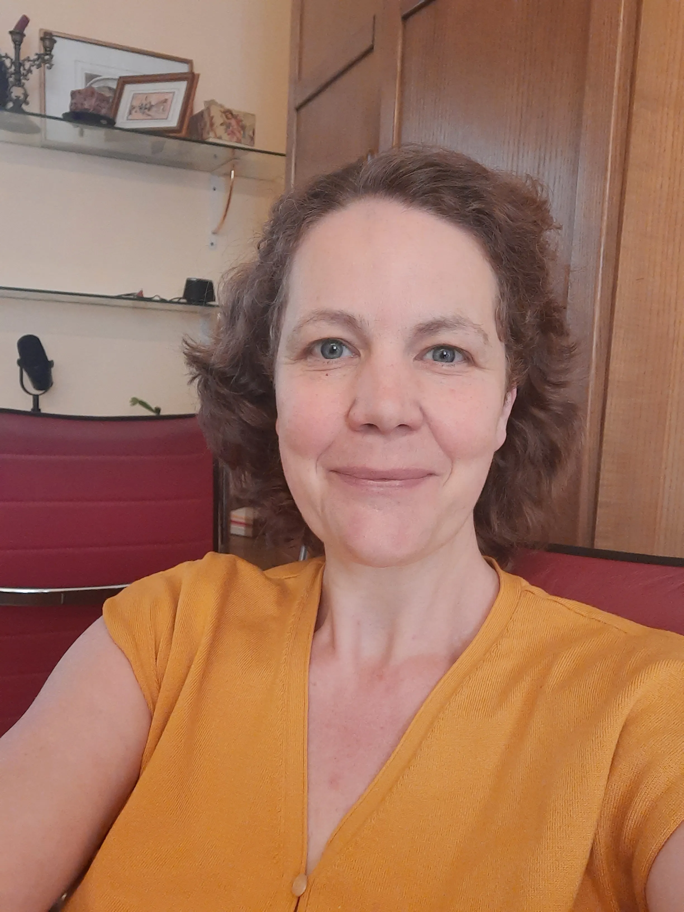

Deine Stimme. Unser Radio.
Bringe deine Stimme ins Radio.
Sinnfunk ist ein werbefreies Webradio für gute Gespräche, Bücher, Geschichten und Menschen mit etwas zu sagen.

So kannst du bei Sinnfunk mitmachen
Drei Wege zu deiner Stimme
Gespräch im Radio
Du möchtest gehört werden, aber ein eigener Podcast ist dir zu viel Aufwand? Wir zeichnen gemeinsam ein Gespräch auf – ruhig vorbereitet und professionell aufbereitet. Die Aufnahme gehört dir.
- Vorgespräch & Vorbereitung
- Professionelle Aufnahme & Nachbearbeitung
- Die Aufnahme gehört dir
Podcast einreichen
Du produzierst bereits einen Podcast? Gerne nehmen wir ausgewählte Folgen in unser Programm auf. Dein Inhalt bleibt dein Inhalt – wir geben ihm einfach mehr Reichweite.
- Bestehende Folgen einreichen
- Mehr Hörer für deinen Podcast
- Du bleibst Eigentümer deiner Inhalte
Eigenvorstellung hochladen
Stelle dein Buch, dein Unternehmen, dein Projekt oder deine Veranstaltung im Radio vor – mit deiner eigenen fertigen Aufnahme, die du selbst gestaltest und hochlädst.
- Du bestimmst die Inhalte
- Geplant und angekündigt im Programm
- Bis 90 Minuten pro Episode
Sendeprogramm
Fixe Sendeplätze
Für bestimmte Inhalte gibt es wöchentlich wiederkehrende Sendeplätze. Alle anderen Episoden laufen in der allgemeinen Rotation und werden mindestens dreimal im Jahr ausgestrahlt. Der genaue Zeitpunkt richtet sich nach dem Eingang – wer zuerst einreicht, sendet zuerst.
Was du wissen musst
Die Regeln bei Sinnfunk
Sinnfunk ist ein Gesprächs- und Podcast-Radio für Inhalte, die verbinden statt polarisieren. Damit das so bleibt, gibt es ein paar klare Spielregeln.
Sinnfunk bietet bewusst einen Raum abseits von Polarisierung.
Nicht geeignet sind Inhalte zu aktuellen politischen Auseinandersetzungen, Verschwörungstheorien, Feminismus & gendergerechter Sprache, Migration, Klimawandel und Ähnlichem.
Bei Sinnfunk geht es um Inhalte, die keine starken Gefühle entfachen.
Sinnfunk ist ein Radio für Worte, Gedanken und Gespräche.
Keine Musik – außer einem kurzen Gong im Hintergrund oder einer kurzen, lizenzfreien Einspielung von einigen Sekunden.
Du darfst dich selbst sowie deine eigenen Angebote vorstellen – Bücher, Seminare, Kurse oder Beratungen.
Wichtig: Keine Werbung für fremde Unternehmen, Produkte oder Dienstleistungen. Die gesetzlichen Werbebeschränkungen (z. B. Alkohol, Waffen) gelten selbstverständlich.
Veröffentliche keine verleumderischen oder rufschädigenden Aussagen über Personen oder Organisationen.
Bei medizinischen, psychologischen oder therapeutischen Themen sind keine Heilsversprechen und keine unbelegten Behauptungen erlaubt.
Jeder Sinnfunker ist für die Rechtmäßigkeit seiner Inhalte selbst verantwortlich.
Inhalte, die du selbst vorstellst, müssen gut hörbar sein: nicht zu leise, keine störenden Hintergrundgeräusche und eine verständliche Aussprache.
Da Sinnfunk ein regionales Radio ist, darf dabei gerne Mundart gesprochen werden.
Preise
Vorteilspreise bis 31.12.2026
Eigenvorstellung im Radio
Lade deine fertige Aufnahme hoch und stelle dein Buch, dein Unternehmen, dein Projekt oder deine Veranstaltung vor.
- Deine Episode mehrfach im Programm ausgestrahlt
- Fixer Sendeplatz, angekündigt im Programm
- Dauer: bis 90 Minuten pro Episode
- Volle Kontrolle über deine Inhalte
Ab 01.01.2027:
50 € pro Eigenvorstellung
Aufnahme mit Verena
Wir zeichnen gemeinsam ein Gespräch auf – professionell aufbereitet und geschnitten. Die Aufnahme gehört dir und kann frei verwendet werden.
- Vorgespräch & persönliche Vorbereitung
- Professioneller Schnitt & Nachbearbeitung
- Audiodatei gehört dir – frei verwendbar
- Aufzeichnung bis zu 2 Stunden
Reguläre Preise ab 01. Jänner 2027
Die oben genannten Preise sind Vorteilspreise und gelten nur bis 31.12.2026. Ab 01.01.2027 gelten die regulären Preise:

Kontakt
Sprich mit mir
Du hast Fragen oder möchtest mitmachen? Anrufen ist vormittags möglich. Eine Nachricht kannst du jederzeit schreiben.